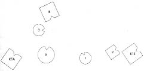
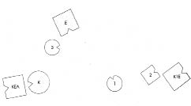
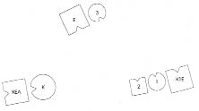
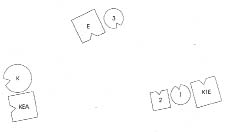
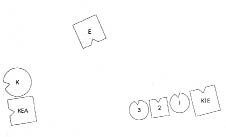
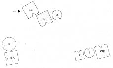

HELLINGER Georg’a Söz konusu olan nedir?
GEORG Eroin bağımlısı bir kızım var.
HELLINGER O halde güncel aileni dizelim: Kimlerden oluşuyor?
GEORG Karım, ben, bizim bir kızımız, karımın da ilk evliliğinden iki çocuğu daha var.
HELLINGER Neden ayrılmış?
GEORG Çok farklılarmış birbirlerinden, yolları ayrılmış. Karım aslında başka biriyle evlenmek isterken bir takım nedenlerden ötürü o adamla evlenmiş.
HELLINGER Neden başkasını istiyormuş?
GEORG Bana söylediği kadarıyla kendisini diğerine daha fazla bağlı hissediyormuş.
HELLINGER Bu adam da gerekiyor bize. –Sen daha önce ciddi bir ilişki yaşadın mı?
GEORG Hayır.
HELLINGER Karının ilk evliliğinden olan çocukları kimin yanında büyüdü?
GEORG Karımın. Ama oğlu çok mesafeli. Kızı da ondan uzaklaştı biraz. Yine de ilişkileri sürüyor.
1. Resim

K Kadın
1E Kadının ilk eşi, 1 ve 2’nin babası
1 İlk çocuk, kız
2 İkinci çocuk, erkek
E Erkek (=Georg), 3’ün babası
3 Üçüncü çocuk, kız, eroin bağımlısı
KEA Kadının erkek arkadaşı
HELLINGER Koca nasıl?
ERKEK Çelişik duygular içindeyim. Bir yandan, çocuğumuzu böyle bölüp ayırdığımız için müthiş bir öfke duyuyorum, öte yandan hiçbir şey yapamamanın çaresizliğini yaşıyorum. Ayrıca karımın erkek arkadaşını gırtlağından tuttuğum gibi yere yatırmak ve ne pisliğin döndüğünü nihayet ortaya çıkarmak istiyorum.
HELLINGER Kadın nasıl?
KADIN Sol yanımdan, erkek arkadaşım tarafından büyük bir sıcaklık geliyor. Güler. Şaşırtıcı bu. Beni rahatsız eden, tek bir çocuğu görüp diğer çocuklarımı görememem. Kocam çok uzakta.
HELLINGER Burada çözüm avucumuzun içinde. Tek bir çözüm var.
Hellinger erkek arkadaşın yüzünü çevirir, kadını da onun arkasına yerleştirir.
2. Resim

HELLINGER Çözüm bu. Erkek şimdi nasıl?
ERKEK Kadın arkasını döndüğü anda gerilim azaldı. Şimdi yalnız ve üzgünüm.
HELLINGER Kız nasıl?
ÜÇÜNCÜ ÇOCUK Daha önce berbattım. Kendimi yalnız hissediyordum. Başkasına zarar vermemek için kendime zarar verebileceğimi hissediyordum. Şimdi her şey biraz daha açık. Hâlâ boşluğa bakıyorum ama biraz daha sakinim.
Hellinger kızı babasının soluna, kadının yüzünü çevirdiği ilk kocasının yanına da onun çocuklarını yerleştirir.
3. Resim

HELLINGER Burada, babanın yanında olmak nasıl?
ÜÇÜNCÜ ÇOCUK Daha iyi, daha açık. Sanki burada huzur bulabilirmişim gibi geliyor.
HELLINGER Oğul nasıl?
İKİNCİ ÇOCUK Şimdi iyi. Daha önce çok dışlanmıştım. Doğru değildi.
İLK ÇOCUK Ben de daha iyiyim.
İLK KOCA Ben de çok daha iyiyim.
HELLINGER Kadın nasıl?
KADIN Ben iyi değilim. Burada kendimi cezalandırılmış hissediyorum. Güler.
HELLINGER Haklı olarak.
Grupta gülüşmeler
HELLINGER Erkek arkadaş nasıl?
KADININ ERKEK ARKADAŞI Dizimin ilk halinde çok iyiydim. Sonra yüzümü çevirdiğinde tamamen koptuğumu düşündüm ama kadını da çevirdiğini fark ettim. Bunu gördüğümde içimi birden büyük bir sıcaklık kapladı yeniden ve aslında onun benim yanımda durabileceğini düşündüm.
HELLINGER Bunu yapabiliriz.
4. Resim

HELLINGER Kadın ve erkek arkadaşı pek de mutlu görünmediğinde Aşk rüyası gerçeğinden biraz daha güzeldir.
Grupta gülüşme ve alkışlar.
HELLINGER Georg’a Şimdi yerine geçmek ister misin?
Georg kızının önce sağına geçer, ardından soluna geçmek ister.
HELLINGER Hayır, hayır, yerinde kal.
GEORG Kadın benden çok uzakta. Onu görmem gerek. Bana daha yakın olmalı.
Kızı “Yoo!” diyerek başını sallar.
HELLINGER gruba Kızın güvenebileceği kimsesi yok.
Hellinger onu üvey kardeşlerinin yanına yerleştirir.
5. Resim

HELLINGER Böyle nasıl?
ÜÇÜNCÜ ÇOCUK Ben deminki yerimdeyken bunu istemiştim. Georg kendi yerini almadan önce daha güvende olduğumu hissetmiş, onun bana bunu verebileceğini ummuştum. Ama “Karım daha yakına gelmeli” dediğinde içimden hayır, ben bunu istemiyorum diye geçti. Burada, kardeşlerimin yanında nerede olduğumu bildiğimi hissediyorum. Nereden yardım alacağımı, yardımın babadan mı geldiğini bilemesem de eşitlik var burada. Eş değerli ve doğru basamakta duruyorum.
HELLINGER Bağımlılık konusunda söylemek istediğim bir şey var. Madde bağımlılığı, anne kocayı aşağı gördüğü ve çocuğa babadan hayır gelmeyeceği, sadece anneden geleceği mesajını ilettiğinde oluşur. O zaman da çocuk kendisine zarar verecek kadar fazla alır. Bağımlılık, çocuğun babadan alamayışının anneye yönelik öcüdür. Bundan ötürü, babanın da çocuğa vermesi, çocuğun babadan alması, bunun da annenin karşısında yapılmasıyla iyileştirilir.
Burada bu mümkün değil. Fark ettiniz mi? Erkek, çocuğa gereksindiğini vermeye hazır değil. Çocuk ihtiyaç duyduğu şeyi ne annesinden alabiliyor ne de babasından. Geriye yalnızca kardeşleri kalıyor.
İlk kocaya Kızın senin çocuklarının yanında durması senin için nasıl?
İLK KOCA Bir şey değişmiyor.
HELLINGER gruba Hepsi arasında en güvenilir olan o, çok daha güvenilir olan. Çocuk orada güvende, oraya gitmeli.
Georg’a Duruma senin için açıklık getirebildim mi?
GEORG Evet. Ancak bunu gerçekte yerine getirmek zor.
HELLINGER gruba Benim tahminim, Georg’un kendisinin babasız olduğu. O da babasına yönelemiyor.
Georg’a Senin ailende nasıldı durum?
GEORG Babasız büyüdüm, karım da öyle.
HELLINGER İşte bulduk. Bu ailede kızı kurtarabilecek eril güç yok. –Şimdi Georg’un babasını da dizime ekleyelim ve neyin değiştiğine bakalım.
Hellinger babasını Georg’un sağ tarafına, arkasına gelecek şekilde yerleştirir.
6. Resim

EB Erkeğin babası
HELLINGER Kız şimdi nasıl?
ÜÇÜNCÜ ÇOCUK Benim için o (erkeğin babası) daha sevimli. Yüksek sesle güler.
HELLINGER kıza Şimdi babanın yanına geç.
HELLINGER Nasıl?
ÜÇÜNCÜ ÇOCUK Az öncekinden daha iyi.
GEORG Benim için de iyi.
HELLINGER Artık kızına bakabilir, karından vazgeçebilir misin?
GEORG tereddütle Evet, evet.
HELLINGER Tamam, bu kadar o halde.
Gruba Bu konuda sorusu olan var mı?
KATILIMCI KADIN Neden kızı babanın soluna yerleştirdin?
HELLINGER Anneden uzakta olması için.
KATILIMCI Benim için tam da doğru değildi. Ben Georg’u öylece bırakmazdım. Belki bir öğüde daha ihtiyacı olduğunu düşünüyorum.
HELLINGER Onu kendi ruhuna emanet ediyorum.